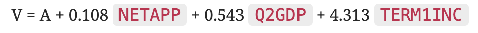
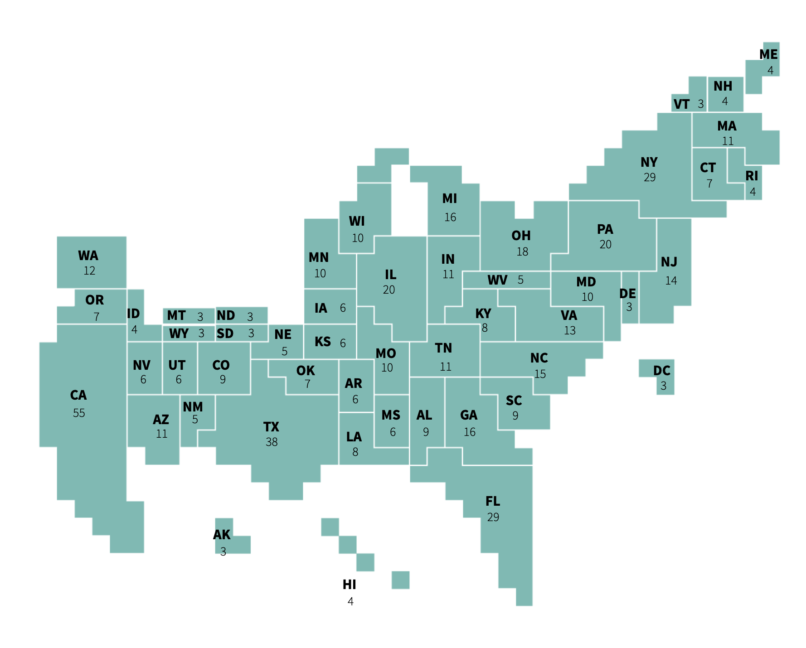

The evidence for Presidential campaigns' influence on election outcomes
is weak. Sorry if you spent a lot of time picking your policies!
According to the Minimal Effects Model, so much is already
baked into the Presidential contest that campaigns have little impact on
how people vote (source).
Most election outcomes are determined by fundamentals such as partisan
loyalties, the incumbent president's approval rating, and economic
growth. Since you've already won your party's nomination, voters during
the November Presidential election assume you're a reasonable candidate.
This model predicts the two-party popular vote based on 3
variables:
Incumbent President's popularity (NETAPP). Measured by net approval rating at midyear. (Approval rating subtracted by disapproval rating). Positive net approval means their approval rating was higher.
The state of the economy (G2GDP). Measured by the annualized growth of real GDP in the 2nd quarter of election year.
The time the
incumbent party has been in office (TERM1INC). Presence (1) or absence (0) of a first-term incumbent in the race
The output of the model produces V, which is the incumbent
party's share of the two-party presidential vote, and A is a
constant (in 2016, A was 47.26):
 Thus, since the model calculates the incumbent party's share
of the vote, the incumbent party is often disadvantaged in open-seat
elections, since TERM1INC is 0. Hence the name "Time-for-change" 😄.
On average across 6 elections from 1992 to 2008, the model missed the
final results by only 1.7 percentage points.
Try it Out!
However, this doesn’t necessarily mean the November Presidential
campaigns don’t matter. A small percentage of undecided voters in swing
states can still shift the outcomes of the election because of the
structure of the
electoral college.
Electoral College
In the US, the Presidency is won through the Electoral College system,
which allots electoral votes to the 50 states based on population
size. Most
states (48/50) use a winner-take-all approach where the candidate that
wins the most votes in that state gets all of its electoral
votes. Maine and Nebraska use a district-based system that allows
their electoral votes to be split. In order for a candidate to win,
they must secure 270 of the 538 electoral votes. Thus, most campaigns
focus on battleground states, rather than Democratic or Republican
strongholds. Since most states follow a winner-take-all approach, this
also means that Presidents can win the electoral college without
winning the popular vote, which is the total number of votes cast by
voters nationwide.
Additionally, when there are large discrepancies in campaign funding and
resources, campaigns can have a greater effect.